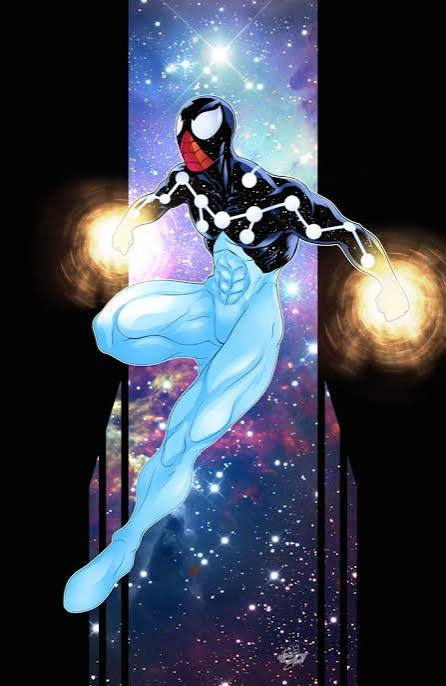

Cosmic Spider-Man (Tierra-13)

Nombre Real
Peter Parker (Capitán Universo)
Primera Aparición
Apareció por primera vez como Capitán Universo en Spectacular Spider-Man #158 (diciembre de 1989). Como entidad permanente de la Tierra-13 debutó en Amazing Spider-Man (Vol. 3) #9 (2014).
Lore / Historia
En esta realidad, Peter Parker nunca perdió la omnipresente "Fuerza Enigma" (Enigma Force), convirtiéndose de manera permanente en el Capitán Universo. Con poder divino y absoluto, su planeta Tierra-13 sirvió como el refugio principal para todos los Spider-Men perseguidos del Multiverso.
Logro Importante
Era la versión de Spider-Man más poderosa de todas las realidades existentes, capaz de retener a la familia de los Herederos y proteger la Zona Segura gracias a sus poderes cósmicos casi ilimitados.